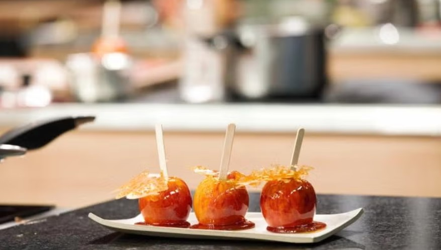

Maçã Je T'Aime
| Tempo |
Porções |
Dificuldade |
| 30 minutos |
3 porções |
Médio |

Ingredientes:
- 200 g de açúcar refinado
- 50 ml de água
- 3 maçãs fuji ou outra de sua preferência
Modo de preparo:
- Pré-aqueça o forno a 180°C.
- No liquidificador, bata os ovos, o açúcar, o óleo e o leite até ficar homogêneo.
- Transfira para uma tigela e misture a farinha e o chocolate em pó peneirados.
- Adicione o fermento e misture delicadamente.
- Despeje em uma forma untada e enfarinhada.
- Leve ao forno por cerca de 35 minutos ou até passar no teste do palito.
Receita original